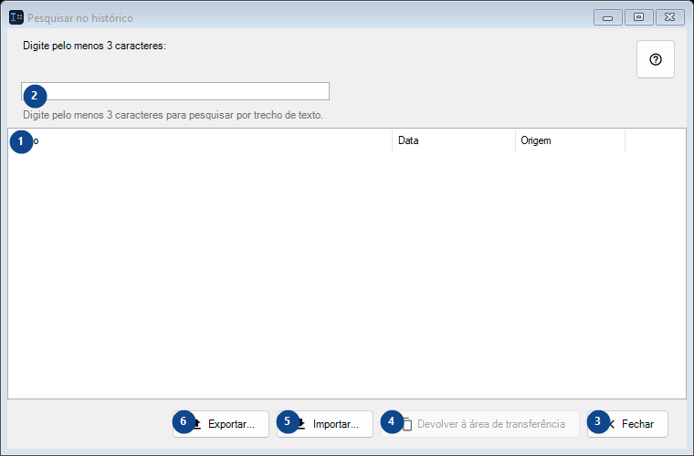
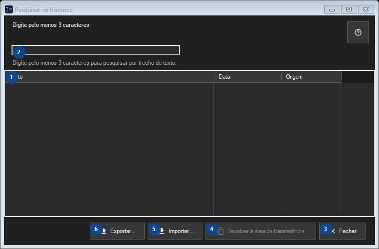

Pesquisar no histórico
Para que serve
O histórico é armazenado apenas localmente e criptografado com o Windows DPAPI para a sua conta.


Ordem de utilização
Leia as explicações numeradas, escolha os valores necessários e continue com o comando da janela.
Elementos
1. Elementos
Esta área mostra o conteúdo ou estado atual. Selecione uma entrada para trabalhar com ela. Texto / Data / Origem
Os seus atalhos2. Digite pelo menos 3 caracteres:
Escolha ou introduza o valor da etiqueta adjacente. Verifique-o antes de continuar.
Os seus atalhos3. Fechar
Use este comando para a ação indicada. Leia qualquer confirmação antes de aceitar.
Os seus atalhos4. Devolver à área de transferência
Use este comando para a ação indicada. Leia qualquer confirmação antes de aceitar. Este elemento não está disponível. Ative primeiro a função ou selecione uma entrada.
Os seus atalhos5. Importar...
Use este comando para a ação indicada. Leia qualquer confirmação antes de aceitar.
Os seus atalhos6. Exportar...
Use este comando para a ação indicada. Leia qualquer confirmação antes de aceitar.
Os seus atalhos